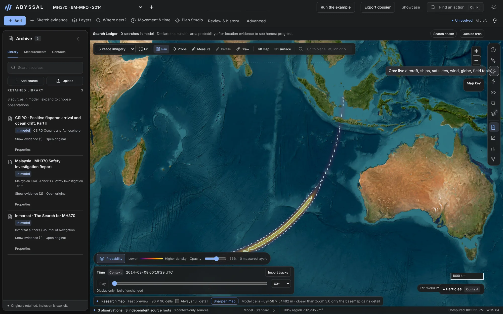
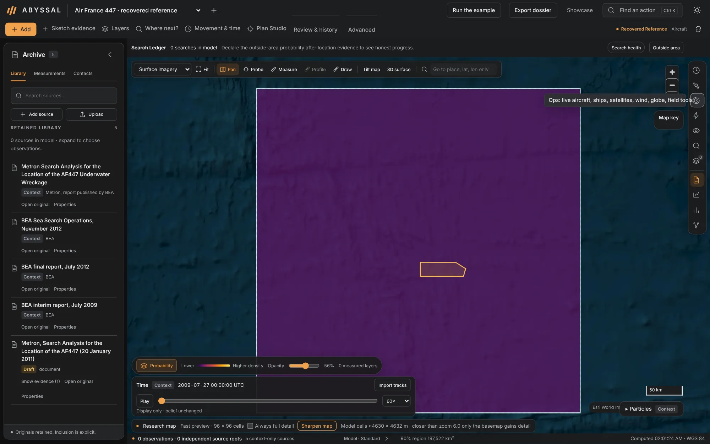

A probabilistic tool can be demonstrated on invented data forever, and the demonstrations will always look good, because the person who invented the data also invented the answer. ABYSSAL ships with three real historical cases for the opposite reason. Each is hard in a different way, each has public sources that can be checked, and in each the honest thing to say turns out to be less impressive than the tempting thing.
None of the three is the product. They are data packs loaded by the same general code as any new case; a rule in the codebase forbids any line of application code from branching on a specific case or place. They are stress tests, and this part is about what they stress.
01Merchant Royal, 1641: what is a league?
In September 1641 the English merchant ship Merchant Royal, returning from Spain and the Caribbean, foundered off the Cornish coast with a famous cargo of bullion. She has never been found. Almost everything known about where she went down rests on contemporary accounts, and ABYSSAL's case pack retains 114 of them: a London pamphlet titled Sad news from the seas, catalogue entries describing it in different libraries, calendars of state papers, later retellings, modern summaries.

Most of those 114 documents are echoes, in exactly the sense of Part 4: they describe, catalogue or retell the same small number of original accounts. Only one admitted observation shapes the map: the pamphlet says the ship sank ten leagues from Land's End. It gives no bearing.
Turning that phrase into a likelihood is where the honesty lies. A league in 1641 was not one fixed distance. Edmund Gunter's 1636 tables, retained in the case pack, give competing conventions, and the nautical league that later settled at three nautical miles was not yet standard. The case's interpretation, written into the observation itself, reads:
The original pamphlet says ten leagues without a bearing. English league conversion is uncertain: an analyst sensitivity of 2.0–3.1 nautical miles per league gives 20–31 nm. This default uses the midpoint 25.5 nm, an effective ±10.5 nm width (5.5 nm unit half-range plus 5 nm assumed reporting error), and a soft plateau. The error allowance and 75% trust are analyst choices, not measured or calibrated probabilities.Observation interpretation, Merchant Royal case pack
The kernel is a ring centred on a stated headland reference, with a flat top across the plausible league conversions and soft shoulders for reporting error. With reliability \(r = 0.75\), the v2 contamination mixture from Part 3 keeps a quarter of the prior untouched: the pamphlet might be wrong, or might be describing somewhere else. This case is where the difference between model v1 and v2 was first measured: the mass within one kernel scale of the claim went from 6.53% to 35.63%, and the 50% credible area from 570,052 km² to 14,713 km², for the same evidence and the same stated trust.
The Merchant Royal also exercises the safety invariant. Historic wrecks can be protected sites and war graves; the export rules withhold exact coordinates of protected sites by default, and the case's seabed context (EMODnet bathymetry and the UK Hydrographic Office's wreck and survey records) is displayed as context, never as evidence that a particular charted wreck is this one.
02MH370: rings from a satellite
Malaysia Airlines flight 370 disappeared on 8 March 2014. After its transponder went silent and military radar lost it, the only systematic evidence of where it went came from a satellite communications terminal that kept answering hourly "handshakes" from an Inmarsat satellite in geostationary orbit. The timing of each reply (the burst timing offset) measures the round-trip time from ground station to satellite to aircraft and back, and so the aircraft's distance from the satellite. A fixed distance from a point in space intersects the Earth's surface in a ring. Seven handshakes gave seven rings; the last, the famous seventh arc, sweeps through the southern Indian Ocean.

A ring is a one-dimensional constraint. Where along it? That depends on the flight path: speed, heading, altitude and turns between handshakes, all unobserved. The natural tool is a sequential Monte Carlo particle filter: simulate many possible flight paths, weight each by how well it matches each successive ring, resample, repeat. ABYSSAL has a research prototype that does exactly this.
The refusal
The prototype's diagnostics looked healthy. Its effective sample size, the standard measure of how many particles are doing useful work, recovered after every resampling step. It was lying. Resampling duplicates good particles and discards bad ones, so after several steps most of the surviving particles can be copies of copies of a handful of original paths. The effective sample size after resampling measures diversity now; it says nothing about how many independent histories the cloud descends from.
Tracing each final particle back to its root ancestor exposed the problem. At 1,000 particles, the posterior weight of the southern route swung between 0.000 and 1.000 depending on the random seed. At 200,000 particles, two seeds still disagreed: 0.678 against 0.629. A posterior that changes its answer when you change the random seed has not converged, whatever its diagnostics say.
The truth here is exactly 50/50: the observations fit a mirrored north and south route equally. Each band is one original particle's descendants; its thickness is the share of the cloud they occupy after each resampling step. Amber bands started on the southern route, violet on the northern; grey bands died out. Step the seed from #1 to #12: the "south" share swings between roughly 20% and 80% although nothing about the data changed, while the ESS looks healthy throughout. More particles help, but slowly.
So ABYSSAL refuses. The flight-path module stays in the product as a read-only context prototype, and it publishes no search prior. A better sampler (tempered SMC with move steps, or a different parameterisation) might converge, and the experimental v3 engine has some of that machinery. Until one demonstrably does, across seeds and particle counts, the case uses only the published arcs and analyses, with their stated assumptions.
03AF447: the case where the answer is known
Air France 447 was lost over the equatorial Atlantic on 1 June 2009, flying from Rio de Janeiro to Paris. Floating debris was recovered within days, but the wreck lay in deep, rugged terrain. Three search phases over two years (listening for the flight recorders' acoustic beacons, towed side-scan sonar, autonomous vehicles) found nothing. In 2011 a Bayesian reanalysis combined the earlier searches with an explicit allowance for the possibility that the beacons had failed, and the wreck was found within about a week of the resumed search, in an area near the top of the new map.
That makes AF447 the one reference case with a known answer, and therefore the one place ABYSSAL can be scored. The temptation is obvious: replay the search, show that the map ranked the wreck highly, put the number on a slide. The backtest is built to make that temptation hard to act on.
How the backtest is kept honest
- The answer is sealed. The published wreck reference lives in a separate file that is never passed to prior construction, detection choices or inference. It is read only after all four phase maps are frozen, and a mutation test changes the answer key and checks that nothing upstream changes.
- Only what was known at the time. Phase 2 uses the detection probability published before the discovery (0.83), not the higher retrospective value (0.90) published after it. Using a parameter revised in the light of the answer leaks the answer.
- A proper score. Each phase is scored by the log score, \(\log_2 p(\text{cell containing the wreck})\). It is a strictly proper scoring rule: in expectation it is maximised only by reporting your true beliefs, and it punishes confident misses without limit. Gains are differences in log score, in bits.
| Phase (as of) | Mass on the wreck cell | Log score | Gain vs uniform | Rank of 6,400 | Area searched first |
|---|---|---|---|---|---|
| 0 · Uniform prior (1 Jun 2009) | 0.000156 | −12.644 | +0.000 | 4,112 | 126,896 km² |
| 1 · Last known position + 40 NM reach (5 Jun 2009) | 0.003448 | −8.180 | +4.464 | 10 | 309 km² |
| 2 · After the towed sonar (18 Aug 2009) | 0.003647 | −8.099 | +4.545 | 10 | 309 km² |
| 3 · After the AUV searches, approximate (24 May 2010) | 0.004171 | −7.905 | +4.738 | 8 | 247 km² |
Ranked eighth out of 6,400 cells. The 99.9th percentile. A marketing deck would stop there. The backtest report does not, and neither will I.
Six reasons not to cite that number
- The rank is almost mechanical. Phase 1 is a Gaussian centred on the last known position, and the wreck happened to lie about 10 km from it, 0.27 standard deviations. Any sensible prior centred there would rank it highly. The uniform prior is a strawman; the fair comparison for later phases is Phase 1.
- The engine's own contribution was small. Against Phase 1, negative-search accounting added 0.08 bits in Phase 2 and 0.28 bits in Phase 3. Sweeping the assumed Phase 2 detection probability from 0.2 to 0.99 changes that by only 0.02 to 0.10 bits.
- No search covered the wreck. None of the pinned historical search polygons contains the wreck cell, so the searches only moved mass elsewhere. The backtest cannot say how well ABYSSAL handles a search that passed over the target and missed, which is the interesting case.
- The box was chosen. A 4° × 4° box around the last known position already excludes the rest of the Atlantic. Widen the box and the gain over uniform grows for no reason.
- Phase 3 is approximate. The published footprints lack georeferenced zones of different detection probability and the acoustic shadows of rugged terrain, so Phase 3 is a caveated sensitivity check at a uniform POD of 0.5.
- One case is not a calibration. A single outcome can be scored, but it cannot tell you whether 90% regions contain the truth 90% of the time. That needs many cases: planted-target trials, or the thousands of vessels that go dark and reappear on AIS every week.

That last point is the second refusal. It would be easy to admit the three published search phases as negative evidence with the published detection probabilities and produce a dramatic map. ABYSSAL's calibration gate says no: the sources state planning PODs, not measured, spatially resolved ones, and a search with an unmeasured POD cannot be allowed to clear ground. The searches appear in the case as context and as a clearly labelled sensitivity analysis.
04What the three cases have in common
Each case tests a different layer of the system. The Merchant Royal tests evidence: reading old documents, recognising echoes, turning an ambiguous unit into an honest likelihood. MH370 tests inference: whether a sophisticated method has actually converged before its output is trusted. AF447 tests validation: whether a model can be scored against reality without fooling the person scoring it.
And in each, the result I am proudest of is a limit. The pamphlet supports a ring, not a point. The particle filter publishes nothing. The backtest's headline is followed immediately by six reasons to distrust it. A tool that will tell you when not to believe it is more useful than one that is always confident, because the second kind cannot be trusted on the days it is right.
Suppose you could hide a thousand targets at random positions drawn from a known distribution, search for each with a known plan, and ask ABYSSAL for a map every time. If its 90% regions contained the target about 900 times, the maps are calibrated. If they contained it 700 times, the maps are overconfident by a measurable amount, and you know how much to widen them. Nobody can do this with aircraft. It can be done with test objects on land and in shallow water, and it can be done for free with ships that switch off their transponders and later switch them back on. That is the calibration scoreboard described in Part 9, and it is the most important thing ABYSSAL does not yet have.
Next, the last part: how all of this was built, and where it goes.